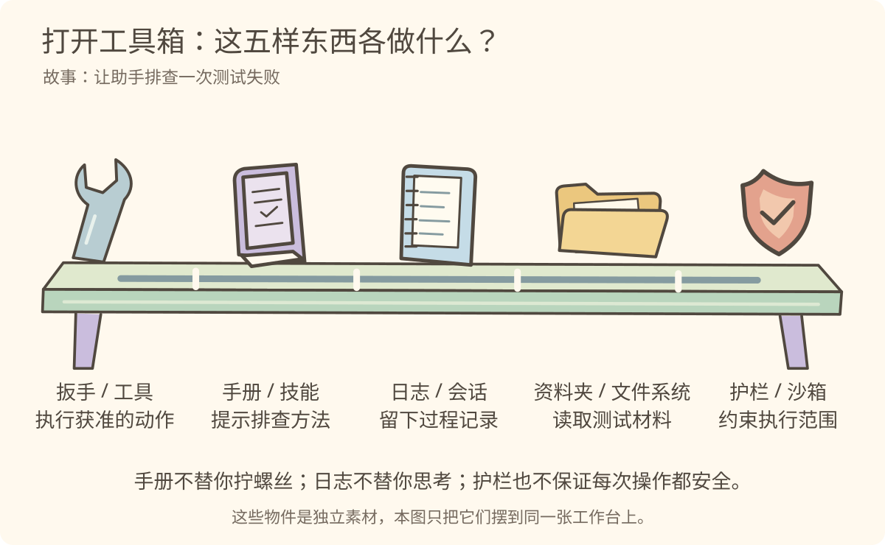
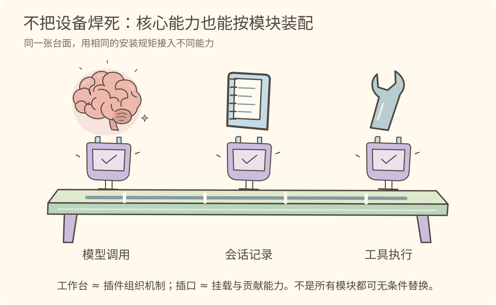
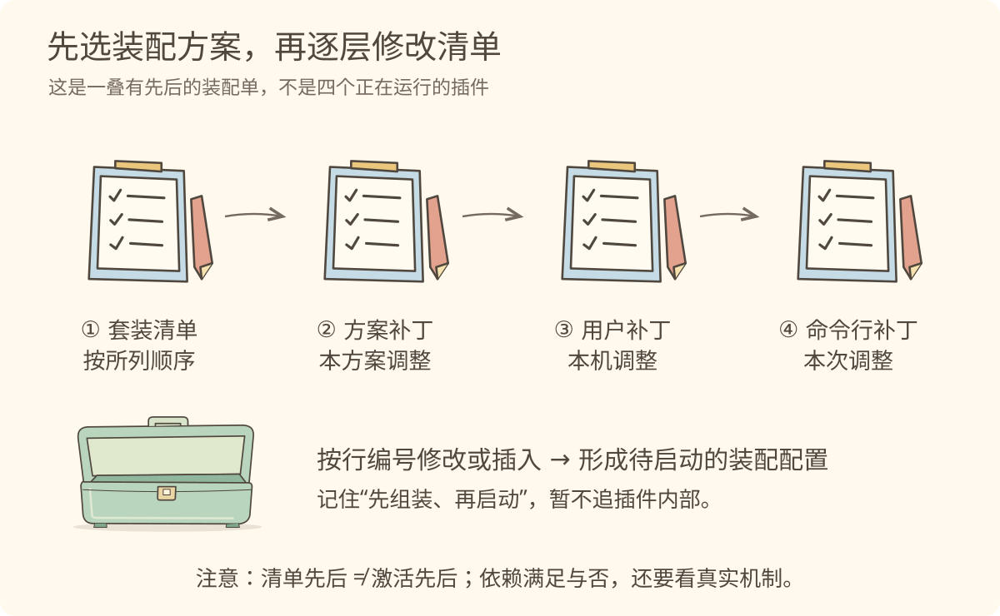
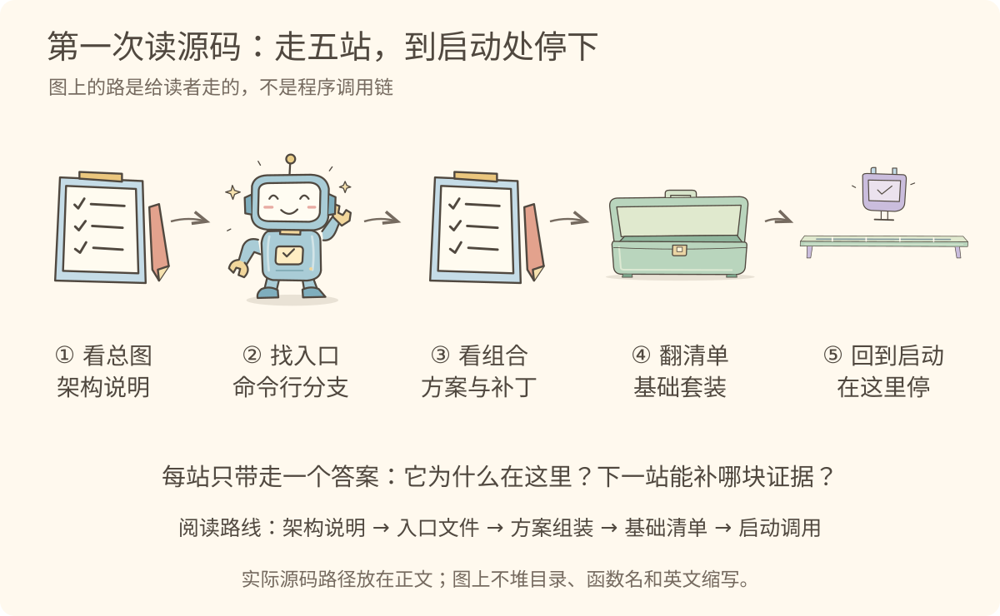
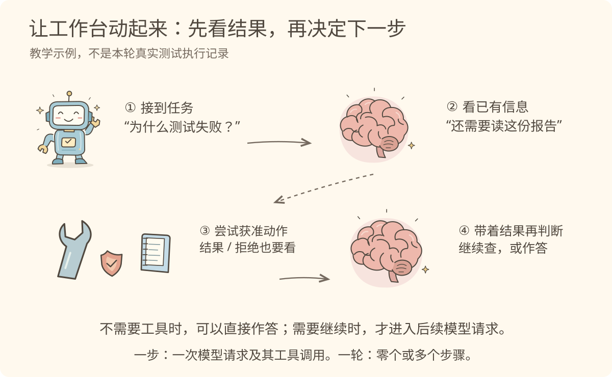

视觉课件
第一讲 · 一颗大脑，还缺什么？
源码快照：cd5ef8148158c3a752a658978873241fdf8e2bbc。比喻帮助理解，结论以该快照的源码与维护文档为准。
1. 它说得对，但它动过手吗？
你发来一句：“测试失败了，帮我看看。”如果只把这句话交给模型，它能推理和生成建议，却不能仅凭这句话知道磁盘上的实际报告。
模型（Model）先想成一颗大脑；运行支撑系统（Harness）先想成它的工具箱和整套工作安排。两者配合，才形成我们平常说的“能做事的助手”。
图 1：会想与能做不是一回事。这里的助手指整体智能体系统，不是源码 Agent 类型的定义；工具箱也不只有工具。
先暂停三秒：图中如果只剩下大脑，哪件事不能据此声称已经发生？ 答：真实读文件或运行测试。分析文字不等于执行证据。
回到源码：模型调用、工具、会话和循环由不同包承担职责。模型调用包；核心架构。
2. 排查时，到底拿哪件东西？
我们打开箱子，不先背五个英文名。想象你真的走进工作间：材料在资料夹里，步骤在手册里，动作靠扳手，过程记在日志上，危险动作受护栏约束。

图 2：先分清“做、教、记、读、约束”，再记名字。并排是职责对照，不是运行顺序；护栏不意味着绝对安全。
工具（Tool）是可调用的动作；技能（Skill）是可复用的任务指令；会话（Session）保存追加的事件记录；文件系统（Filesystem）提供访问文件材料的能力；沙箱（Sandbox）在本项目中主要约束子进程的文件影响范围。
小测：给助手一本“测试排查手册”，它就能跑测试了吗？ 不能。还需要相应工具、执行环境和允许执行的条件。
证据：工具、技能、会话、文件能力、沙箱。
3. 为什么不把所有设备焊在一张台子上？
想加一个新模型、换一种日志保存方式，就去修改同一个巨大主函数，会让变化彼此牵连。这里的直觉不是“插件很多”，而是“能力之间留有装配边界”。
插件（Plugin）像可安装的模块。Cordis 是管理这些模块的框架：让它们贡献服务、声明依赖、参与事件与回收副作用。先把它想成工作台的安装规矩，不把它想成另一个模型。

图 3：核心能力也用插件装配，不只是外围扩展才叫插件。接口、依赖和生命周期仍需匹配，不能理解成随便拔插。
回到源码：架构说明 明确把模型适配器、工具注册、会话日志和循环列为插件；Cordis 入门 解释它们如何协作。
4. 同一套零件，怎么装成不同工作室？
装配方案（Profile）决定采用哪些套装和调整；套装（Bundle）带来一组插件配置与代码；补丁（Patch）按规则调整配置。

图 4：这是配置应用顺序，不是插件激活顺序。实际 overlays 还包含启动代码合成的调整；图中只突出常见的命令行补丁入口。
不用猜框架机制，先读 allPatches()。四组展开顺序就是眼前这叠清单的源码依据。具体插件能否激活，还要看依赖等条件。
5. 第一次打开仓库，去哪里？

图 5：我们去翻配置，再回到调用处；配置文件不是被函数“调用”的一站。
准确文件和要找的符号在 逐步讲解 的“五站源码小旅行”。第一讲在 boot() 停下，把“怎么组起来”看清后，再学“怎么跑起来”。
6. 接到任务之后，不是一路直冲到底

图 6：动作结果回来以后，才有新的证据。需要工具只是一个可能分支，工具可能被拒绝，模型也可能直接回答。
一步（Step）是一次模型请求及其工具调用；一轮（Turn）可以有零个或多个步骤。接收输入不应被画成某一步内部的模型调用。参见 运行过程。
合上这一页，试着说一句：大脑想，支撑系统组织做；日志留下证据，结果决定后续。
逐步讲解
第一讲逐步讲解 · 跟着一次测试排查，走进工作室
源码快照：cd5ef8148158c3a752a658978873241fdf8e2bbc。比喻帮助理解，结论以该快照的源码与维护文档为准。
一、先别管术语：它真的看过报告吗？
假设我们正在维护一个 Java 服务，刚改完校验逻辑，一条测试失败了。你对助手说：“帮我找原因。”下面是为讲解而设计的场景，不代表教材生成时实际运行了这条测试。
助手回答：“可能是边界条件没覆盖。”这句话听起来合理，但你会追问：哪条断言？预期值是什么？实际值是什么？它是否真的打开过报告？
这个追问很重要。一句像样的解释，只能证明生成了这句话，不能证明读取或执行已经发生。
模型（Model）接收提供给它的上下文，推理并生成输出。输出可能是文字，也可能包含工具调用请求。模型像大脑：能判断“应该去看报告”，但这个判断还不是一次文件读取。
让请求真的接到工具、把结果带回来、留下过程记录，再决定是否继续，需要模型之外的运行支撑系统（Harness）。
图 1：这里说的是整体助手的教学近似。源码中的 Agent 是具体运行对象的控制句柄，不能拿图中的等式直接定义它。
回到真实项目。 模型调用包 负责不依赖具体厂商的调用接口和共享消息词汇；具体适配器处理厂商差异。Agent 包 提供运行对象的句柄、登记与事件，默认创建和驱动由 Agent Loop 提供。循环（Agent Loop）像安排“下一步做什么”的值班流程，但不是大脑本身，也不是整个 Harness。
现在只记一个区别：会推理是模型的能力，把推理嵌进可持续工作过程是系统的工作。
二、拿到手册，不等于拿到了扳手
继续这个测试故事。我们希望助手先看失败断言，再核对相关代码，最后用证据解释原因。这里开始需要五件不同的东西。
图 2：同一台面表示这些职责共同支撑任务，不表示它们在源码中依次调用。
1. 扳手：动作真的发生在这里
工具（Tool）是对模型暴露的可调用动作及其受保护的执行路径。模型可能请求“读某个文件”，工具系统负责查找相应实现，并经过策略等环节尝试执行。
联想到 Java 后端：方法签名说明“能请求什么”，实现才真正做事，拦截器或权限检查还可能拒绝请求。但这只是帮助入门，并不是说工具注册就是 Spring MVC。
工具包的职责说明 同时提到工具定义与执行管线，所以我们不能把“模型看到了工具说明”写成“它已经有权限执行”。
2. 手册：告诉它怎样做，不替它做
技能（Skill）是一组可复用的任务指令。可以像团队的故障排查手册：先收集什么证据、按什么顺序判断、如何输出结果。
手册里写“运行相关测试”，不会自己启动进程。真正执行仍要靠工具；是否允许执行仍受执行策略约束。反过来，有测试工具但没有合适方法，助手也可能查错方向。
技能包 还区分提供指令的来源、汇总目录和加载使用的一侧。第一讲知道“可发现、可加载的指令”即可，暂不拆内部机制。
3. 日志：记的是经过，不是凭空多一个大脑
会话（Session）像工作日志。用户输入、模型输出以及工作过程中相关事件形成可追加的记录。需要下一次模型请求时，可以从日志派生消息。
这里有两个容易漏掉的限制。第一，日志不等于每次原样、全量送给模型的内容。第二，日志能力不等于已经可靠地落盘；持久化是独立后端的职责。会话包 对追加事件、deriveMessages 和独立持久化有明确说明。
你可以联想到事件日志与读模型：同一份历史可以组织成供特定用途读取的结果。不过本讲不把它与某个 Java 事件溯源框架画等号。
4. 资料夹与护栏：材料在哪儿，动作能到哪儿
文件系统（Filesystem）能力让系统读写文件材料；文件工具再把相关能力呈现为模型可请求的动作。它不是模型训练时记住的知识。文件能力组 区分接口、实现和面向模型的工具。
沙箱（Sandbox）在本项目的这组包中，主要对子进程执行的文件影响范围施加策略。护栏这个比喻只是说“有约束”，并不等于绝对安全。也不能把它直接换成 Docker：同一环境中的限制，与容器、虚拟机或远程执行环境的替换不是一回事。沙箱边界说明。
把这个故事翻译成一句话：手册提示怎么查，工具尝试动作，资料夹提供材料，日志保留经过，护栏约束范围。大脑根据得到的证据继续判断。
三、为什么连“核心”都做成插件？
想象一个主函数同时写死模型调用、工具列表、日志保存和循环逻辑。你只想更换日志后端，却要小心别碰坏整个工作流程。
这并不是说本项目曾经这样实现过，而是一个用于理解设计价值的反例。可插拔的价值，在于让能力有相对稳定的边界，并由框架管理装配和生命周期，而不是每次都重写整台机器。
图 3：工作台比喻插件组织框架，不是硬件、操作系统或沙箱；模块化也不意味着任意实现都兼容。
插件（Plugin）可以贡献可调用的服务、类型化事件或可回收的副作用。服务（Service）在这里先理解成“通过稳定名称提供给其他插件的能力”；事件（Event）则让多个参与者围绕某件事协作。
共享上下文（Context）是查找这些服务的入口，例如 ctx.tools、ctx.llm、ctx.sessions。注意，同样叫“上下文”，它不是每次交给模型的那份提示和消息。
Cordis 是组织这些插件的框架。Cordis 入门 给出三个现在就有用的规则：
- 用稳定的服务键找到能力，不要求消费者直接导入某个具体实现。
- 通过 inject 声明必需服务，依赖满足后才能激活，而不是仅看文件位置。
- 注册监听器、提示片段等副作用时保留回收机制，卸载或重载时能够清理。
这和 Spring 的依赖注入、生命周期管理有相似的入门直觉；但别把 ApplicationContext、Bean、Cordis Context 和 Plugin 逐个机械对号入座。我们接下来读的是真实服务键、插件配置和注入声明。
“核心也是插件”的直接证据在 架构说明：模型适配器、工具注册、会话日志、循环本身都按插件组织。再去基础套装里找对应配置行，才能把这个说法落地。
四、装配方案不是另一种模型
同样一套零件，可以用于不同场景。装配方案（Profile）像工作室的选装单：采用哪些套装，再做哪些调整。套装（Bundle）是分发的一组配置行和代码。补丁（Patch）则按规则修改这份装配结果。
图 4：图中的先后只说明配置应用。补丁按配置行 ID 定位，可能替换整份 config 或插入新行，不能想成任意嵌套键都自动递归合并。
现在值得看几行源码了。我们不是为了记 TypeScript 语法，而是为了核实“几层清单按什么顺序叠”。
profile-boot.ts 的 allPatches()：
function allPatches(composed: ComposedProfile): PatchOptions[] {
return [
...composed.bundlePatches,
...composed.profile.patches,
...composed.homePatches,
...composed.overlays,
]
}
只看四个名字和排列顺序：套装层、方案自己的补丁、用户层、叠加层。最后一层包括命令行 --patch，也包含当前启动逻辑合成的调整；图为第一印象只突出常见入口。
运行时先准备有效装配配置，再交给启动流程。这段函数返回的是补丁列表，不是在这里挨个启动插件。 “激活先后还要看依赖”这个结论，要回到 Cordis 的注入机制，不能从数组里猜出来。
另一个边界：架构文档 说明常见入口复用 base 套装，但 sdk-minimal 是例外。因此本讲查 base 能帮助理解默认能力，不能由此推出所有方案都用同一套插件。
五、五站源码小旅行：每站只问一件事
图 5：这不是函数调用链。读者中途去翻 YAML 配置，再返回启动函数。
第一站：先知道要找什么
打开 docs/architecture.md，只读 Cordis、Profiles and bundles、Core packages。回答：“核心能力通过什么方式组起来？”
不要被后面所有事件名称吸走。先画出大脑和工作台，才知道接下来找的是什么。
第二站：找到命令行的门
打开 apps/cli/src/bin.ts，找到 parseDshArgs() 和 profile 分支。这段是原文件分支的节选：
case 'profile': {
const { runProfile } = await import('./profile-boot.ts')
await runProfile({
environment: loadLayeredEnv('dsh'),
profile: invocation.profile,
patchFiles: invocation.patches,
args: invocation.args,
})
break
}
看三件事：这是 profile 分支；它把选中的方案与补丁传下去；它调用 runProfile()。这份文件是门口分流，不是把所有核心能力写在一起的巨型循环。
第三站：看谁整理装配单
进入 apps/cli/src/profile-boot.ts，先搜索 composeProfile、allPatches、runProfile。
composeProfile() 准备方案及相关层；allPatches() 提供应用顺序；runProfile() 把组装工作接到启动。具体配置加载器如何处理依赖，先不追。我们要认识这一层的职责，不是背完每个辅助函数。
第四站：去货架核对“核心也是插件”
暂时离开调用代码，翻 packages/bundle/base/cordis.patch.yml。
| 配置行 ID |
快照行号 |
先记哪个角色 |
| llm |
27 |
模型调用能力 |
| session |
33 |
会话记录 |
| agent |
67 |
运行对象句柄与登记 |
| tools |
474 |
工具注册与执行路径 |
| system-prompt |
479 |
系统提示组装 |
| agent-loop |
486 |
默认运行驱动 |
这些行足以证明基础套装声明了相关插件配置，不足以证明它们在本机成功加载、实际激活顺序如何、某个工具已经执行。配置存在和运行成功是两种证据。
第五站：回到启动边界，停下
返回 runProfile() 内的 boot() 调用。只看调用前部，以下用省略号标记本讲不展开的回调：
const ctx = await boot(
NAME,
rootConfig,
structuredClone(allPatches(composed)),
/* 原文件此处还有初始化回调，本讲暂不展开 */
)
这是便于观察参数的删节示意，不是可直接替换原文件的完整代码。现在只看 rootConfig 和 allPatches(composed) 如何交到 boot()。回调中的环境注入、命令行服务及就绪处理留给后续入口专题。
至此，你已有一条可靠的阅读路线：从入口识别方案，去组装函数看清补丁，再到清单核对核心角色，最后返回启动边界。路线是导航建议，源码事实是每一站亲眼看到的证据。
六、台子搭好以后，一次排查怎么往前走？
回到开头的测试。工作台已经装好，用户输入也到了。下面只展示“可能需要调用工具”的一种教学路径。
图 6：虚线是可选的工具路径。模型不一定调用工具；工具也可能被拒绝或失败。故事次序不代表所有底层事件的精确发生顺序。
先是输入被接收并进入处理流程。随后模型拿到本次提供的信息，可能提出工具请求。运行支撑组织一次受保护的执行尝试，结果或拒绝信息影响后续判断；相关过程进入会话记录。还有事情需要模型继续处理时，再发起后续模型请求。
架构文档的 Turn flow 明确区分：一步（Step）是一次模型请求加上其工具调用；一轮（Turn）可以包含零个或多个步骤。输入接收不是 Step 的定义，模型直接回答也是正常分支。
所以不要把助手想成“模型一次性吐出全部正确动作”的流水线。更有用的画面是：看证据，做一次受约束的尝试，再看结果。 本讲不保证它一定查对，也不保证每个请求都会被允许。
七、拿掉图片，你现在应该能说什么？
模型负责推理生成；Harness 把模型调用、工具执行、状态记录、策略和继续工作组织起来。DeepSeek Harness 用 Cordis 插件组合核心能力，方案和补丁决定要装哪些配置。第一次读源码看清装配，在 boot() 停下，下一步再进入真实运行机制。
如果你能用测试排查故事解释这些关系，并指出“配置顺序不是激活顺序”，第一讲已经达到目标。不用再为记不住十几个英文单词而重读一遍。
需要查词时去 词典；想验证自己是否真的理解，去 练习；想核对边界，查 事实矩阵。
练习与答案
第一讲练习 · 不是背词，而是判断下一步
源码快照：cd5ef8148158c3a752a658978873241fdf8e2bbc。先作答，再核对证据。
准备一张纸，给自己 15–20 分钟。先写答案，再展开。答得不完整没有关系，重点是知道哪项结论需要什么证据。
1. 找出缺失的那件物品
助手已经加载“测试排查手册”，却没有可执行命令的工具。你说：“既然学会了方法，现在就能运行测试。”
这句话哪里不成立？用“手册”和“扳手”回答，再翻译成真实术语。
展开答案与理由
手册提示怎么做，不会自己拧螺丝。Skill 是可复用指令，不会凭空提供命令执行能力；仍需工具、相应执行环境和允许执行的条件。即使工具已注册，也不能据此保证某次调用一定获准。
证据：技能职责、工具注册与执行路径。
2. 不看图，重新摆一遍工作台
从 独立素材库 选大脑、扳手、手册、日志和资料夹。在纸上摆出“读取测试报告，再判断原因”的场景。最多画两条有名字的箭头。
给每个物件写一个动词，并说明：你画的是职责关系，还是严格运行顺序？
展开一种参考摆法
大脑“判断”，手册“指导”，扳手“执行”，资料夹“供给材料”，日志“记录”。
可以画“大脑 → 工具：提出读取请求”和“动作结果 → 后续模型请求：提供新的证据”。第二条箭头是教学简化，真实系统由运行支撑组织结果、历史和后续请求，并非工具直接驱动大脑。
手册放在旁边表示指导，不要画成替代执行器。没有证据时不要把每个物件串成唯一时序。重要的是能解释箭头，不是箭头画得多。
3. 谁的“上下文”？
同事说：“Cordis Context 里有 ctx.sessions，所以它就是给模型看的聊天记录。”
请指出混淆了哪两件事。
展开答案与理由
Cordis Context 是插件取得共享服务的入口；模型上下文是某次请求里实际提供给模型的信息，两者不是同一概念。
Session 是追加事件日志，模型消息可由日志派生；不是每次必定把全部日志照搬过去。ctx.sessions 表示上下文中可取得的会话服务，不是把容器等同于聊天消息数组。
证据：Cordis 五个概念、会话职责。
4. 带着一个问题去定位源码
只做读取，不运行项目、不修改源码。沿第一讲路线找到：
- CLI 的 profile 分支把哪三个与方案/调用有关的字段交给 runProfile()？
- allPatches() 的四层顺序是什么？
- 在 base 清单中找到 llm、session、agent、tools、system-prompt、agent-loop。
- 回到调用 boot() 的地方，指出传入的配置与补丁参数。
展开定位答案
bin.ts 传下 profile、patchFiles、args，并另外传下 environment。
allPatches() 依次组合 bundlePatches、profile.patches、homePatches、overlays。
base 清单 当前快照中，六行 ID 分别在 27、33、67、474、479、486 行。行号只适用于本讲快照；遇到新提交应按 ID 搜索。
boot() 调用 接收 rootConfig，以及 structuredClone(allPatches(composed))，还包括名称和初始化回调。看到这里就可以停。
这组检查证明了代码和配置关系，不能证明本机已经成功启动。
5. 预测变化，而不是猜结果
如果替换文件能力的实现，文件工具是否一定要全部重写？如果替换后工具执行失败，能不能马上判定“插件化没用”？
展开答案与边界
在提供者遵守相同能力契约、路径与执行环境相互匹配的前提下，消费者通常不应依赖具体实现，这是保持边界的价值。但“可替换”不代表任意实现都兼容，更不保证权限、环境、行为细节全相同。
出现失败时需要核对服务契约、挂载配置、执行环境和具体错误，不能仅凭结果否定设计，也不能承诺替换一定零成本。
证据：文件能力组。这是有条件的设计推断，不是本讲执行过的替换实验。
6. 修正三句“听着很对”的话
- A：“模型说已经读过文件，所以文件一定读成功了。”
- B：“补丁清单中的后一个插件，会比前一个晚启动。”
- C：“一个 Turn 至少有一个 Step；每个 Step 都一定执行工具。”
展开准确表述
A：模型生成了一项声明。确认读取成功需要实际工具结果或相应运行证据，不能只看文字承诺。
B：补丁的配置应用顺序不等于插件激活顺序；服务依赖和其他机制也影响激活。
C：Turn 可以包含零个或多个 Step；Step 是一次模型请求及其工具调用，模型可能不请求工具，工具请求也可能被拒绝。
证据：Cordis 依赖、运行过程。
7. 用五句话教给另一个 Java 工程师
不看稿，依次说清：模型、大脑之外的支撑、五件物品、插件工作台、第一条源码路线。至少提醒听众一个比喻失效点。
展开自评标准
能够说清“会想”和“真正执行”的差别；不把 Skill 与 Tool 混淆；不把 Session 与模型上下文混淆；能解释核心也是插件；读源码时能定位组装和 boot() 边界。这五项比复述英文定义更重要。
如果卡在术语，到 词典 找相应物件；如果卡在证据，回到第 4 题亲自定位。
分享稿
第一讲分享稿 · 五分钟把工作室讲清楚
源码快照：cd5ef8148158c3a752a658978873241fdf8e2bbc。先作答，再核对证据。
这是一份演讲提词，不是另一份完整教材。只用三张主图，其他细节留给提问。
0:00–1:00 · 用一个追问开场
“假如助手告诉你：测试可能因为边界条件失败。你先问它什么？”
等对方回答。然后接：“我会问——你真的打开过测试报告吗？分析文字与执行证据不是一回事。”
展示 大脑与工具箱。
“模型像大脑，负责推理生成；Harness 是模型外的运行支撑，组织能力、记录与后续过程。两者配合才形成能持续工作的整体助手。这是教学近似，不是源码 Agent 类型的公式。”
1:00–2:20 · 打开工具箱
展示 五件独立物品。
“扳手是工具，真正执行动作；手册是技能，指导方法；日志是会话，保留经过；资料夹代表文件材料；护栏代表执行约束。”
停一下，让听众选：“只有手册没有扳手，能跑测试吗？”接着强调：“不能。工具还可能被策略拒绝，护栏也不承诺绝对安全。”
“还有一处常见混淆：日志不是每次原封不动塞给模型的全部内容，落盘也有独立后端。”
2:20–3:30 · 工作台为什么能换装
展示 插拔模块工作台。
“核心能力不全焊在主函数里。模型适配器、工具注册、会话日志和循环本身也通过插件组织。Cordis 管理服务、依赖、事件和生命周期。它类似提供装配规矩的工作台，不是另一颗大脑。”
“Java 工程师可以借助依赖注入与生命周期理解它，但不要机械地把 Cordis 当成 Spring。”
3:30–4:30 · 让比喻落到源码
“先读架构说明，再从 bin.ts 的 profile 分支找到 runProfile()。看 composeProfile() 和 allPatches() 如何整理配置，到 base 的 YAML 核对核心插件行，最后回到 boot() 停下。”
提醒一句：“我刚才描述的是阅读路线，不是说 YAML 是被调用的函数。清单应用顺序，也不是插件激活顺序。”
出处：入口、配置层、基础清单。
4:30–5:00 · 用一句话收尾
“模型负责想，支撑系统组织做；日志留下证据，结果影响后续。我们先看工作室怎样装起来，再深入研究它怎样一步步跑起来。”
最后请听众复述“手册和扳手有什么不同”。如果能答出，这次分享就留下了一个能继续长大的心智模型。
术语词典
第一讲词典 · 先认物件，再认名字
源码快照：cd5ef8148158c3a752a658978873241fdf8e2bbc。按需查阅，不要求先背下来。
英文保留是为了能在源码中搜索；中文名和物件是帮助理解的入口。下列概念属于本讲语境，不应当作所有 Agent 框架的统一定义。
大脑与整个助手
模型 / Model：像负责思考的大脑，接收提供的信息并推理生成输出，包括可能的工具请求。边界：并非有人的意识，也不等于它亲自读写文件。源码依据。
大语言模型 / LLM：Large Language Model 的缩写。本项目的 llm 服务把不同模型提供方的调用与共享消息形式隔开；这个服务不是模型参数本身。源码依据。
运行支撑系统 / Harness：像工具箱加整套工作安排，把模型、工具、记录、策略和继续执行组织起来。不要直译“马具”后就停止理解，也不要把它缩成一份工具列表。架构依据。
整体智能体系统 / Agentic system：图中的小机器人，代表面向用户的完整助手。“Model + Harness”是第一印象，不是严格类型等式。
运行对象 / Agent：源码里有更窄的意义，是用来交互和控制一次运行对象的句柄，相关包还管理登记和事件。句柄（handle）可以先理解为“操作对象的把手”，不代表它里面装了所有实现。源码依据。
运行循环 / Agent Loop：默认的创建与驱动实现，组织运行往后进行。像安排工序的流程，不是大脑，也不是整个 Harness。源码依据。
工作台上的五件物品
工具 / Tool → 扳手：可请求的动作定义与受保护的执行路径。像后端有名字和参数的能力调用，但是否执行还要看策略、环境与结果。误解：有工具说明就等于获准执行。源码依据。
技能 / Skill → 操作手册：可发现、可加载的可复用指令，类似团队的操作规程。SOP 是 Standard Operating Procedure，指标准操作规程。误解：加载技能就自动拥有它描述的工具或权限。源码依据。
会话 / Session → 工作日志：追加的事件历史，可从中派生模型消息。误解：它只是聊天气泡数组、每次全部传给模型，或者天然已经落盘。源码依据。
文件系统 / Filesystem → 资料夹：访问文件材料的能力及实现，模型可见的文件工具再使用这些能力。误解：文件内容属于模型内置知识；或工具直接绑定唯一的一种本地实现。源码依据。
沙箱 / Sandbox → 护栏盾牌：本项目中有关子进程文件影响策略的能力组。误解：它必然就是 Docker 或虚拟机，或者出现盾牌就代表绝对安全。源码依据。
为什么模块能一起工作
插件 / Plugin → 插拔模块：挂载后贡献能力的单元，不仅指下载的第三方扩展。核心模型适配、工具、会话、循环也能是插件。边界：模块替换仍有契约和依赖，不是任意热拔插。架构依据。
Cordis → 工作台的组织机制：本项目使用的插件框架。管理上下文中的服务、依赖、事件与可回收副作用。Java 类比：依赖注入和生命周期是入口；不能认定其机制与 Spring 完全一致。源码依据。
共享上下文 / Context → 能力登记与取用处：通过 ctx.tools 等稳定键取得服务。特别注意：Cordis Context 不是模型上下文；后者是某次模型请求得到的提示、消息等信息。依据。
服务 / Service → 对外提供的能力：其他插件通过稳定键使用它。提供者 / Provider 是具体提供该能力的一侧，消费者 / Consumer 是使用的一侧。注入 / inject 表示声明服务依赖；适配器 / Adapter 负责接到某个具体提供方。不要把 Service 只理解成一个 Java interface。能力边界。
事件 / Event → 工作中的协作通知或交接点：不同事件有不同分发语义，并非所有事件都等于“发出去就不管”。可回收副作用 / reversible effect 指注册监听器等行为能够在卸载时清理，不是自动撤销任意文件或业务数据修改。依据。
装配清单与时间单位
装配方案 / Profile：选择套装并附带自身调整的方案。套装 / Bundle：带配置行和代码的一组分发单元。配置补丁 / Patch：按规则修改装配配置的调整。叠加层 / Overlay：用于当前调用等场景的额外补丁层。误解：所有方案都必用 base、所有配置键都递归合并、清单顺序就是激活顺序。依据。
命令行入口 / CLI：Command-Line Interface，命令行界面。本讲在 bin.ts 中跟随 profile 分支。源码。
启动 / boot()：本讲停止阅读的启动调用边界；不要把名字当成它已运行成功的证据。源码。
一步 / Step：一次模型请求及其工具调用；可以没有工具。一轮 / Turn：零个或多个步骤。输入接收不属于 Step 的定义。依据。
想用图记忆：打开 独立素材库。同一个物件可以换位置，但职责与比喻边界不能跟着随意变化。
{kind=link}
{kind=link}
{kind=link}